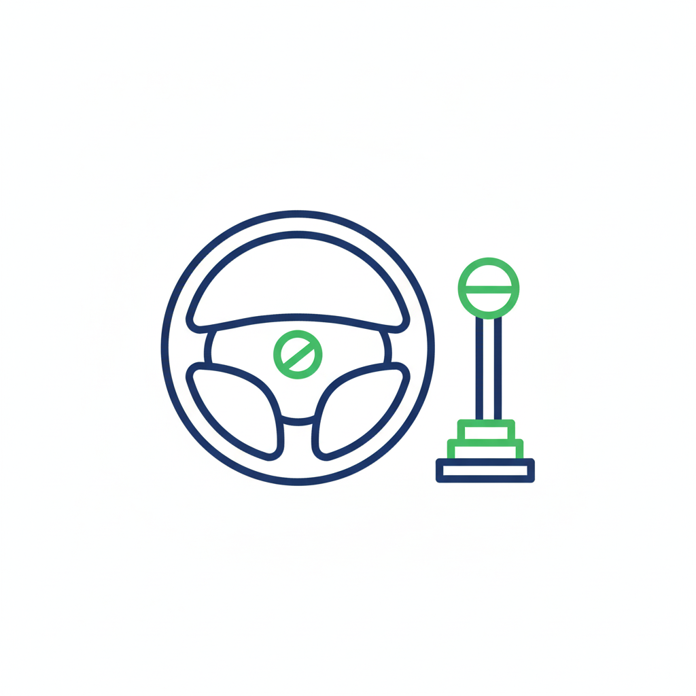

Basic Car Control Skills
Click on a skill to reveal simple open-ended questions.
Foundation Skills & Knowledge

Why Basic Skills Matter?
Mastering car control is the foundation of safety. It allows the learner to focus on observation and hazard perception, rather than struggling with gears or steering, making driving intuitive and safe.
Mastering car control is the foundation of safety. It allows the learner to focus on observation and hazard perception, rather than struggling with gears or steering, making driving intuitive and safe.
Common Learner Errors
- Poor Steering Control: Not keeping hands in correct position, causing erratic lane positioning.
- Incorrect Gear Selection: Driving too fast in low gears or struggling to find the right gear, disrupting flow.
- Lack of Mirror Usage: Not checking mirrors before changing speed or direction, failing to anticipate hazards.
Cockpit Drill
Click for simple questionsDSSSM: Doors, Seat, Steering, Seatbelt, Mirrors.
Simple Open Questions:
- "Why is setting your seat and mirrors first important?"
- "How do you check if your seatbelt is secure?"
- "What do you need to check before you start the engine?"
Moving Off
Click for simple questionsChecking mirrors, signaling, and checking blind spots.
Simple Open Questions:
- "What do you need to look for before moving off?"
- "How do you check your blind spots safely?"
- "Why is it important to move off slowly?"
Stopping
Click for simple questionsRoutine stop (MSM) and stopping in an emergency.
Simple Open Questions:
- "How do you decide where is a safe place to stop?"
- "What steps do you take to stop the car smoothly?"
- "What do you check before you open the door to get out?"
Steering
Click for simple questionsCorrect hand position and steering control.
Simple Open Questions:
- "Why is keeping both hands on the wheel important?"
- "How does looking further ahead help your steering?"
- "What happens if you turn the wheel too quickly?"